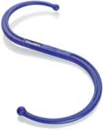
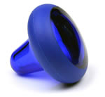

See Biking and Running for specific info and tips.
translated: what are some main causes of your cartilage to wear down and cause pain?
Seems to be weight and age. Both of which seem to be reduced by exercising.
Somewhat summarized in: https://www.theguardian.com/lifeandstyle/2016/jul/18/knees-stretching-heel-striking-three-running-myths-debunked. There are probably some other slightly opposing articles, but it confirms what I hope :)
| Mar 2017, non fasting | Oct 2017, fasting | |
|---|---|---|
| Height | 5' 11“ | |
| Weight | 190 lbs | |
| Body Fat | 19.8% | |
| BMI | 26.0 kg/m2 | |
| Waist | 33 in | |
| Blood pressure | 120/52 | |
| Heart Rate | 61 bpm | |
| Total Cholesterol | 113 | 126 |
| HDL Cholesterol | 42 (low) | 59 |
| LDL Cholesterol | 55 | 58 |
| Non-HDL cholesterol | 67 | |
| CHOL/HDLC Ratio | 2.1 | |
| Triglycerides | 85 | 30 |
| Glucose | 105 | 69 |
| TSH | 2.83 |
| Test Name | Test Result | Normal Range | Flags |
|---|---|---|---|
| GLUCOSE | 69 mg/dL | 65-99 mg/dL | |
| UREA NITROGEN (BUN) | 15 mg/dL | 7-25 mg/dL | |
| CREATININE | 0.92 mg/dL | 0.60-1.35 mg/dL | |
| eGFR NON-AFR. AMERICAN | 114 mL/min/1.73m2 | > OR = 60 mL/min/1.73m2 | |
| eGFR AFRICAN AMERICAN | 132 mL/min/1.73m2 | > OR = 60 mL/min/1.73m2 | |
| BUN/CREATININE RATIO | NOT APPLICABLE (calc) | 6-22 (calc) | |
| SODIUM | 140 mmol/L | 135-146 mmol/L | |
| POTASSIUM | 4.3 mmol/L | 3.5-5.3 mmol/L | |
| CHLORIDE | 101 mmol/L | 98-110 mmol/L | |
| CARBON DIOXIDE | 30 mmol/L | 20-31 mmol/L | |
| CALCIUM | 10.1 mg/dL | 8.6-10.3 mg/dL | |
| PROTEIN, TOTAL | 7.9 g/dL | 6.1-8.1 g/dL | |
| ALBUMIN | 5.3 g/dL | 3.6-5.1 g/dL | |
| GLOBULIN | 2.6 g/dL (calc) | 1.9-3.7 g/dL (calc) | |
| ALBUMIN/GLOBULIN RATIO | 2.0 (calc) | 1.0-2.5 (calc) | |
| BILIRUBIN, TOTAL | 1.1 mg/dL | 0.2-1.2 mg/dL | |
| ALKALINE PHOSPHATASE | 63 U/L | 40-115 U/L | |
| AST | 25 U/L | 10-40 U/L | |
| ALT | 15 U/L | 9-46 U/L |
Anyone can run a marathon, they just have to put in the work <long runs at or below aerobic threshold>.
High Intensity Interval Training (HIIT) will increase muscle strength/efficiency before outputting lactic acid. Cardio is more for increasing body's ability to flush that lactic acid away over long period.
Strengthen glutes with squats/RDL's and leg out balancing thing…forgot.
Strengthening core/back for better strength for running form by doing … ask David?
Reading a nice book / article by Arthur Lydiard: http://www.fitnesssports.com/lyd_clinic_guide/Arthur%20Lydiard.pdf
How to measure your aerobic threshold?
What is the right blend? What is each good for?
IT Band Syndrome treatments (from PainScience.com)
Foam roller, tennis/lacrosse ball are good tools.
| Tool | Worth it? |
|---|---|
| Backknobber and friends  | Not enough touch, and other tools like below might be better |
| Knobble 2  | PainScience.com recommends it, esp for neck massage and trigger points |
Measure fatigue accurately using EMG neuron spikes
Recommended book from Amazon: Exercise physiology : energy, nutrition, and human performance
link. It's pretty unfounded, but sounds nice!
These are designed to move every joint in your body, and to activate every muscle in your body, and stretch every ligament. These are to be done before breakfast.
He spends about forty five minutes each morning doing these exercises – not because he enjoys them but because he believes that they are important.
Ralph is former Portland Ultimate guy. James is older guy with long hair. Paul is Nvidia runner.
YouTube Link! https://www.youtube.com/watch?v=Bmc0ERKfjP0
{kind=link}
{kind=link}